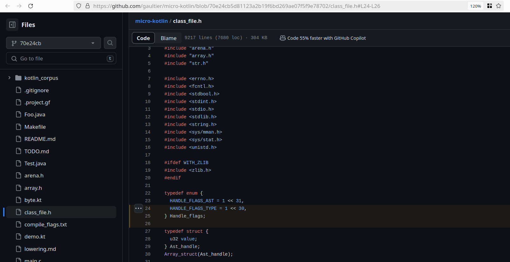

Philippe Gaultier
Philippe Gaultier
Philippe Gaultier
Philippe Gaultier
Published on 2024-03-07
--
This is a big title for a small trick that I've been using daily for years now, in every place I've worked at.
Whenever there is a technical discussion, a bug hunt, or any disagreement about the codebase, I think it really helps to look at existing code to anchor the debate in reality and make it concrete.
Copy pasting code, taking screenshots, or screen sharing may work at times but I have found a low-tech solution that's superior: Sharing a link to a region of code in the codebase. It's shorter, easier, and can be used in chats, documentation and PRs. It works for any code, be it existing code on the main branch, or experimental code on a branch:

Every web UI of every Version Control System (VCS) worth its salt has that feature, let's take Github for example: https://github.com/gaultier/micro-kotlin/blob/master/class_file.h#L773-L775
The hurdle is that every hosting provider has its own URL 'shape' and it's not always documented, so there is a tiny bit of reverse-engineering involved. Compare the previous URL with this one: https://gitlab.com/philigaultier/jvm-bytecode/-/blob/master/class_file.h?ref_type=heads#L125-127. It's slightly different.
So to make it easy to share a link to code with coworkers, I've written a tiny script to craft the URL for me, inside my editor. I select a few lines, hit a keystroke, and the URL is now in the clipboard for me to paste anywhere.
Since I use Neovim and Lua, this is what I'll cover, but I'm sure any editor can do that. Now that I think of it, there should be an existing extension for this? Back when I started using this trick I remember searching for one and finding nothing.
This article could also serve as a gentle introduction to using Lua in Neovim. The code is also directly mappable to Vimscript, Vim9 script or anything really.
So first thing first we need to create a user command to invoke this functionality and later map it to a keystroke:
vim.api.nvim_create_user_command('GitWebUiUrlCopy', function(arg)
end,
{force=true, range=true, nargs=0, desc='Copy to clipboard a URL to a git webui for the current line'})
force=true overrides any previous definition which is handy when iterating over the implementationrange=true allows for selecting multiple lines and calling this command on the line range, but it also works when not selecting anything (in normal mode)nargs=0 means that no argument is passed to the commandWe pass a callback to nvim_create_user_command which will be called when we invoke the command. For now it does nothing but we are going to implement it in a second.
arg is an object containing for our purposes the start and end line numbers:
local line_start = arg.line1
local line_end = arg.line2
And we also need to get the absolute path to the current file:
local file_path_abs = vim.fn.expand('%:p')
From this point on explanations are git specific, but I'm sure other VCSes have similar features.
Note that since the current directory might be one or several directories deep relative to the root of the git repository, we need to fix this path, because the git web UI expects a path from the root of the git repository.
The easiest way to do so is using git ls-files --full-name to convert the absolute path to the path from the root of the repostory.
There are many ways in Neovim to call out to a command in a subprocess, here's one of them, to get the output of the command:
local file_path_abs = vim.fn.expand('%:p')
local file_path_rel_cmd = io.popen('git ls-files --full-name "' .. file_path_abs .. '"')
local file_path_relative_to_git_root = file_path_rel_cmd:read('*a')
file_path_rel_cmd.close()
We also need to get the git URL of the remote (assuming there is only one, but it's easy to expand the logic to handle multiple):
local cmd_handle = io.popen('git remote get-url origin')
local git_origin = cmd_handle:read('*a')
cmd_handle.close()
git_origin = string.gsub(git_origin, "%s+$", "")
And the last bit of information we need is to get the current commit. In the past, I just used the current branch name, however since this is a moving target, it meant that when opening the link, the code might be completely different than what it was when giving out the link. Using a fixed commit is thus better (assuming no one force pushes and messes with the history):
local cmd_handle = io.popen('git rev-parse HEAD')
local git_commit = cmd_handle:read('*a')
cmd_handle.close()
git_commit = string.gsub(git_commit, "%s+$", "")
Now, we can craft the URL by first extracting the interesting parts of the git remote URL and then tacking on at the end all the URL parameters precising the location.
I assume the git remote URL is a ssh URL here, again it's easy to tweak to also handle https URL. Also note that this is the part that's hosting provider specific.
Since I am mainly using Azure DevOps (ADO) and Github at the moment this is what I'll show. In ADO, the git remote URL looks like this:
git@ssh.<hostname>:v3/<organization>/<directory>/<project>
And the final URL looks like:
https://<hostname>/<organization>/<directory>/_git/<project>?<params>
In Github, the git remote URL looks like this:
git@github.com:<username>/<project>.git
And the final URL looks like this:
https://github.com/<username>/<project>/blob/<commit_id>/<file_path>?<params>
We inspect the git remote url to know in which case we are:
local url = ''
if string.match(git_origin, 'github') then
-- Handle Github
elseif string.match(git_origin, 'azure.com') then
-- End is exclusive in that case hence the `+ 1`.
line_end = line_end + 1
-- Handle ADO
else
print('hosting provider not supported')
end
We use a Lua pattern to extract the components from the git remote URL using string.gmatch. It weirdly returns an iterator yielding only one result containing our matches, we use a for loop to do so (perhaps there is an easier way in Lua?):
Here's for Github:
for host, user, project in string.gmatch(git_origin, 'git@([^:]+):([^/]+)/([^/]+)%.git') do
url = 'https://' .. host .. '/' .. user .. '/' .. project .. '/blob/' .. git_commit .. '/' .. file_path_relative_to_git_root .. '#l' .. line_start .. '-l' .. line_end
break
end
And here's for ADO:
for host, org, dir, project in string.gmatch(git_origin, 'git@ssh%.([^:]+):v3/([^/]+)/([^/]+)/([^\n]+)') do
url = 'https://' .. host .. '/' .. org .. '/' .. dir .. '/_git/' .. project .. '?lineStartColumn=1&lineStyle=plain&_a=contents&version=GC' .. git_commit .. '&path=' .. file_path_relative_to_git_root .. '&line=' .. line_start .. '&lineEnd=' .. line_end
break
end
Finally we stick the result in the system clipboard, and we can even open the url in the default browser (I have only tested that logic on Linux but it should work on other OSes):
-- Copy to clipboard.
vim.fn.setreg('+', url)
-- Open URL in the default browser.
local os_name = vim.loop.os_uname().sysname
if os_name == 'Linux' or os_name == 'FreeBSD' or os_name == 'OpenBSD' or os_name == 'NetBSD' then
os.execute('xdg-open "' .. url .. '"')
elseif os_name == 'Darwin' then
os.execute('open "' .. url .. '"')
elseif os_name == 'Windows' then
os.execute('start "' .. url .. '"')
else
print('Unknown os: ' .. os_name)
end
We can now map the command to our favorite keystroke, for me space + x, for both normal mode (n) and visual mode (v):
vim.keymap.set({'v', 'n'}, '<leader>x', ':GitWebUiUrlCopy<CR>')
And that's it, just 60 lines of Lua, and easy to extend to support even more hosting providers.
vim.keymap.set({'v', 'n'}, '<leader>x', ':GitWebUiUrlCopy<CR>')
vim.api.nvim_create_user_command('GitWebUiUrlCopy', function(arg)
local file_path_abs = vim.fn.expand('%:p')
local file_path_rel_cmd = io.popen('git ls-files --full-name "' .. file_path_abs .. '"')
local file_path_relative_to_git_root = file_path_rel_cmd:read('*a')
file_path_rel_cmd.close()
local line_start = arg.line1
local line_end = arg.line2
local cmd_handle = io.popen('git remote get-url origin')
local git_origin = cmd_handle:read('*a')
cmd_handle.close()
git_origin = string.gsub(git_origin, "%s+$", "")
local cmd_handle = io.popen('git rev-parse HEAD')
local git_commit = cmd_handle:read('*a')
cmd_handle.close()
git_commit = string.gsub(git_commit, "%s+$", "")
local url = ''
if string.match(git_origin, 'github') then
for host, user, project in string.gmatch(git_origin, 'git@([^:]+):([^/]+)/([^/]+)%.git') do
url = 'https://' .. host .. '/' .. user .. '/' .. project .. '/blob/' .. git_commit .. '/' .. file_path_relative_to_git_root .. '#L' .. line_start .. '-L' .. line_end
break
end
elseif string.match(git_origin, 'azure.com') then
-- End is exclusive in that case hence the `+ 1`.
line_end = line_end + 1
for host, org, dir, project in string.gmatch(git_origin, 'git@ssh%.([^:]+):v3/([^/]+)/([^/]+)/([^\n]+)') do
url = 'https://' .. host .. '/' .. org .. '/' .. dir .. '/_git/' .. project .. '?lineStartColumn=1&lineStyle=plain&_a=contents&version=GC' .. git_commit .. '&path=' .. file_path_relative_to_git_root .. '&line=' .. line_start .. '&lineEnd=' .. line_end
break
end
else
print('Hosting provider not supported')
end
-- Copy to clipboard.
vim.fn.setreg('+', url)
-- Open URL in the default browser.
local os_name = vim.loop.os_uname().sysname
if os_name == 'Linux' or os_name == 'FreeBSD' or os_name == 'OpenBSD' or os_name == 'NetBSD' then
os.execute('xdg-open "' .. url .. '"')
elseif os_name == 'Darwin' then
os.execute('open "' .. url .. '"')
elseif os_name == 'Windows' then
os.execute('start "' .. url .. '"')
else
print('Unknown os: ' .. os_name)
end
end,
{force=true, range=true, nargs=0, desc='Copy to clipboard a URL to a git webui for the current line'})
If you enjoy what you're reading, you want to support me, and can afford it: Support me. That allows me to write more cool articles!
This blog is open-source! If you find a problem, please open a Github issue. The content of this blog as well as the code snippets are under the BSD-3 License which I also usually use for all my personal projects. It's basically free for every use but you have to mention me as the original author.